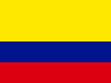
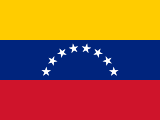
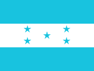
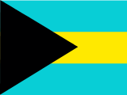
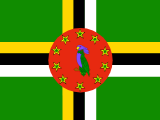

Dictamen del décimo hombre: criterio defectuoso, y la Oficina lo concede entero. El fundamento daba por ocurrida una enmienda del 28 de septiembre que no ocurrió —la pieza es un observatorio pidiéndole al órgano que decida, no el acto—, y eso es fabricar el sustento de una afirmación, que la dirección prohíbe expresamente. Además, dentro de la ventana vencían tres plazos del propio calendario, de modo que el hecho anunciado era casi seguro y no probable. Y la conclusión correcta del panel era que ninguno de los dos hechos era publicable: la Oficina eligió el más fácil de acertar y el único que no se puede puntuar. El caso haitiano sigue en vigilancia; la alerta no sale.
El Conseil Électoral Provisoire de Haití, o el Poder Ejecutivo, publicaría entre el 3 y el 20 de octubre de 2026 al menos un acto que corra, reprograme o enmiende un plazo del calendario electoral 2026-2027 o del decreto electoral.
Confianza baja · plazo 18 días · vence el 2026-10-20 · fuente única
El proceso electoral haitiano avanza bajo condiciones que el propio órgano declara insuficientes. El Conseil Électoral Provisoire informó el 21 de septiembre que operan 1.285 centros de inscripción y que hay más de 628.755 electores inscriptos, «más del 10 % del electorado potencial», a menos de tres meses de los comicios del 13 de diciembre. La fuerza internacional de seguridad está en torno al 30 % de sus 5.550 efectivos autorizados.
El órgano viene enmendando su propio calendario: prorrogó la inscripción de candidaturas el 2 y el 17 de septiembre, y el 28 de septiembre se registró una nueva enmienda al decreto electoral. Anunciar que volverá a hacerlo en las próximas tres semanas es anunciar la continuación de una conducta acreditada, no un giro.
La Oficina publica este hecho y no el otro que trajo el panel. El analista de indicadores propuso anunciar que el contador de hechos de violencia acumularía 140 registros en catorce días, con una tasa base medida de entre 66 % y 75 %. No se publica por una razón del propio instrumento: el colector declara que un «hecho» es una nota de prensa codificada y no un hecho verificado en el terreno, de modo que dos medios que cubren lo mismo producen dos registros. Anunciar que ese contador sigue contando no dice nada sobre Haití.
La banda es la más baja de las dos del panel y la confianza es baja, no por prudencia decorativa sino por un vacío duro: no hay segunda familia de fuentes. ACLED devuelve cero para Haití en las últimas cincuenta y cuatro semanas, y esos ceros no acreditan ausencia de violencia: acreditan que la fuente dejó de entregar.
Criterio de resolución, fijado al nacer la alerta. Se cierra ACERTADA si entre el 3 y el 2026-10-20 inclusive, hora de Puerto Príncipe, el sitio oficial del Conseil Électoral Provisoire —cephaiti.ht, secciones de notas de prensa y resoluciones— o Le Moniteur publican un acto del órgano electoral o del Ejecutivo que corra, reprograme o enmiende cualquier plazo del calendario electoral 2026-2027 o del decreto electoral. Un acto que se limite a reiterar plazos ya vigentes no cuenta. Se cierra NO OCURRIDA si al 2026-10-20 a las 23.59 no consta tal publicación. Si el sitio del órgano deja de estar accesible más de siete días del período y Le Moniteur tampoco publica, se cierra NO RESOLUBLE y no se estima el resultado. Fecha de corte de la recolección: 2 de octubre de 2026.
El décimo hombre
Sostiene que el acto anunciado no es un pronóstico sino un hecho de ocurrencia casi cierta —tres plazos del propio calendario electoral vencen dentro de la ventana del 3 al 20 de octubre—, apoyado en un fundamento cuya premisa principal no existe y resuelto por un criterio que ya produjo un falso positivo en manos de la casa, de modo que lo que corresponde revisar no es la banda sino el hecho elegido y su criterio de resolución.
criterio defectuoso
La Oficina responde
La Oficina concede el veredicto y agrega algo que el dictamen no tenía por qué decir: el primer hallazgo no es un error de criterio, es un hecho fabricado. Objeción 1, concedida, y es la que pesa. El fundamento que la Oficina escribió dice que «el 28 de septiembre se registró una nueva enmienda al decreto electoral». Leída la pieza en vivo el 2/10, no registra ninguna enmienda: es el Observatorio Ciudadano para la Institucionalización de la Democracia pidiéndole al órgano electoral y al Gobierno que las
Lo que no se pudo cerrar
Un juicio sin sus brechas declaradas no se publica. Éstas son las de esta alerta, con el puesto que las declaró — no es lo mismo que el vacío lo diga quien sostiene el juicio o quien lo impugna.
- No se pudo establecer si el alza del indicador corresponde a más violencia en el terreno o a más cobertura de prensa del mismo terreno: la serie cuenta notas codificadas y no hechos verificados, y no existe en los datos de la casa una segunda familia viva que permita separar una cosa de la otra. No se pudo medir la letalidad: la serie de muertes de ACLED para Haití tiene valores sólo hasta el 15 de septiembre de 2025 y devuelve cero desde entonces; no hay en datos/series ninguna otra serie de víctimas. No se pudo medir la geografía del alza —si se concentra en el área metropolitana o si se expandió—, porque la serie es nacional y no tiene capa subnacional. No se pudo medir el componente de protesta como variable independiente: la serie eventos_protesta de Haití tiene mediana cero y 265 de 410 días en cero, de modo que no admite umbral defendible, y se dejó deliberadamente fuera del hecho anunciado. No se pudo consultar expediente: esta alerta no tiene archivo de expediente armado —existen 2026-10-02-HTI-S.json y 2026-10-02-HTI-S.md, y no un 2026-10-02-HTI-S-expediente.md como sí lo tiene la alerta de Perú—, de modo que no se leyó prensa nacional ni antecedente del Estado, y la fecha electoral del 13 de diciembre de 2026 se tomó del propio archivo de la alerta, que la declara confirmada contra ElectionGuide, sin verificación independiente desde este puesto. No se pudo establecer el efecto del calendario electoral sobre el indicador, porque la serie no cubre ninguna elección haitiana anterior: sin un antecedente en la propia serie no hay tasa base electoral que medir, y se declara que no alcanza. Lo que elevaría la confianza de baja a media es concreto: una segunda familia viva, de cobertura diaria o semanal, sobre Haití en el eje seguridad —la reapertura de la serie de ACLED, o un recuento de incidentes de la misión internacional desplegada en el país— que cubra la misma ventana del 3 al 16 de octubre de 2026 y permita cotejar la dirección del movimiento.lo declaró el analista de indicadores
- No se estableció el estado del financiamiento electoral: ninguna fuente consultada da el presupuesto del escrutinio, la brecha pendiente ni los aportes internacionales comprometidos, y es una de las dos condiciones que el propio órgano electoral puso a su calendario. No se localizó el arrêté de convocatoria del pueblo a los comicios para el 13 de diciembre de 2026 ni su publicación en Le Moniteur, de modo que no se pudo determinar si el acto ejecutivo que habilita el escrutinio ya existe. No se leyó en primario el informe flash de BINUH del 6 de agosto de 2026 ni el informe trimestral siguiente: las cifras de víctimas entran referidas por terceros. No se consultó prensa en criollo haitiano ni radio local, exigencia de la casa para Haití, de modo que falta la lectura del terreno en la lengua de uso. No consta posición pública de la OEA ni de la CARICOM sobre la viabilidad de la fecha dentro de los últimos quince días; sólo se registró, vía resultado de búsqueda y sin abrir la pieza, una declaración del Secretario General de la OEA sobre la inhabilitación de candidaturas vinculadas a grupos criminales, que por eso no se cita como fuente. Queda sin resolver la discrepancia entre el 9 y el 14 de octubre como cierre de la inscripción de candidatos, y tampoco se estableció la fecha de cierre del registro de electores en fuente oficial. Queda sin medir cuánto del alza de 6 a 12 hechos diarios responde a un aumento real y cuánto al sesgo de cobertura que advierte la lección L-06 de la casa: la serie es de familia única y de construcción por filtro de palabras, por lo que su magnitud no sostiene juicio. Lo que elevaría esta confianza a alta: una segunda familia de medición independiente del recuento de hechos, el estado del financiamiento en fuente oficial, y el padrón de cierre publicado por el órgano electoral.lo declaró el analista de contexto
La información se cerró el 2026-10-02. Es el corte más temprano de los tres puestos: el juicio descansa en los tres a la vez.




